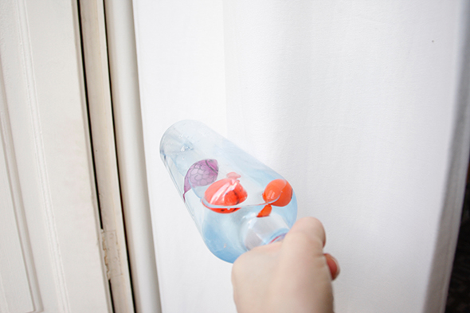
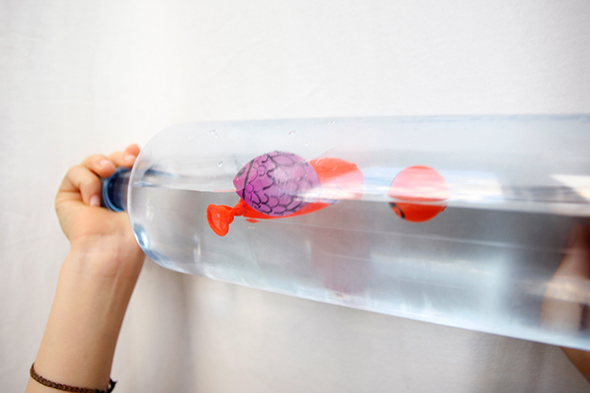

Juguete muy simple hecho en casa para niños pequeños. Llena globos con un poco de agua y aire y pintalos como un pez. Entonces empujados en una botella con 2/3 de agua. Este gran juguete se puede llevar incluso a la bañera.


